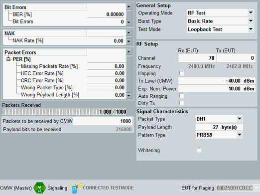
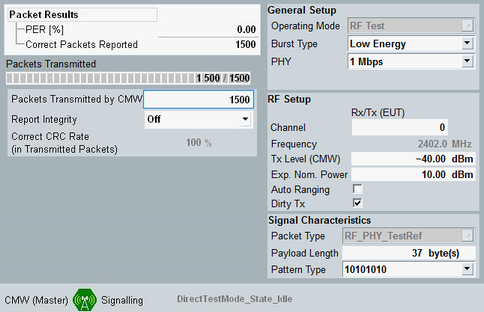
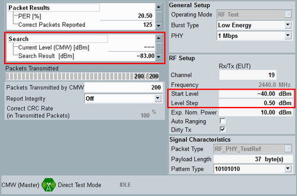

The tabs show the measurement results to the left, settings to the right and the connection status at the bottom.
Additional settings of the "Bluetooth Signaling" application can be accessed via the "Signaling Parameter" softkey and the related hotkeys.
To switch to the signaling application, press the "Bluetooth Signaling" softkey two times.
The "Config" hotkey opens either the configuration dialog of the measurement or the configuration dialog of the signaling application, depending on which softkey is active.
The RX quality views for BR and EDR provide the BER results of loopback tests.
Option R&S CMW-KS610 is required for BR and EDR.

The RX quality views differ for LE. The LE PER measurements provide the results of the RX tests in direct test mode.
Option R&S CMW-KS611 is required for LE 1M PHY. Option R&S CMW-KS721 is also required for LE 2M PHY and LE coded PHY.

Remote commands ...:LE1M are used for LE 1M PHY, ...:LE2M for LE 2M PHY, and ...:LRANge for LE coded PHY.
Comparing to BER/PER views, "BER Search" / "PER Search" views determine the R&S CMW TX level, for which the measured BER/PER values equal the specified BER/PER values.
The measurements start at given "Start Level". The search iteration is performed at decreasing power steps and is stopped if the measured BER/PER exceeds the specified search limits, see "Limits".

For a detailed description of the results to the left, refer to "RX Quality Measurement".
Remote command:BER results:
PER results:
BER search results:
PER search results:
Specifies the start level and power steps for the search iteration of sensitivity level for a given BER/PER value.
The settings are only displayed among the "RF Setup" pane of an RX search measurement. They are not displayed in the configuration tree.
Remote command:- General setup: see "General Settings"
- RF setup:
– For RF frequency settings, see "RF Frequency" – For BER search / PER search -specific RF power settings, see "Start Level (BER Search / PER Search)" – For other RF power settings, see "RF Power Settings" – For the description of dirty transmitter, see "Dirty Transmitter Configuration" - Signal characteristics: see "Signal Characteristics"
The connection status information at the bottom of RX quality tabs shows the signal and connection status, and for BR and EDR also the EUT for paging.
For BR/EDR tests, this information is the same as in the main view, see "Connection Status Tab - Connection Status".
For LE tests, use the remote commands below.
For background information, see "Signaling States".
Remote command:To display the hotkeys, press the "Dirty TX" softkey. The following hotkeys are then available at the bottom of the GUI:
Hotkey | Description |
|---|---|
"Dirty TX Off / On", "Dirty TX Mode" | Settings for fast access |
"Modulation Index", "Frequency Offset", ... | Dirty TX settings if "Dirty Tx Mode" = SINGle values |
"Show Spec. Table" | Dirty TX settings if "Dirty Tx Mode" = SPEC table Use the remote commands below. |
For a description, refer to "Dirty Transmitter Configuration". | |
LE-specific commands: